CS165 Smartphone Programming
- Contextual Circuit Assistant
Ruei-Che Chang
Te-Yen Wu
Android Code
Android apk
Presentation
Motivation
The increase in availability of electronics and the decrease of price offer wider range of people oppotunities in learning circuit prototype. However, when wanting to DIY in-situ or learn by self, novices get little chance to be under mentor's guidance. Also, though online resources can provide extensive knowledge, keeping searching and browsing is time-consuming and could cause distraction. In response, we propose Ambient Circuit Assistant, an accessible way to ambiently assist users in circuit prototyping by generating expert knowledge automatically based on the updates of the breadboard. We hope this system can offer novice users knowledgable yet smooth experience.
System Structure

Holes Segmentation
First, We put the paper codes to hide the numbers and characters as they are noisy to segment the holes.
Second, considering the different illumination in various environments, we always elevate the brightness to some extent so that we can yield the binary picture and then we segment each hole by its width, height and area.
Finally, we will send the coordinate of each hole to Android Client, totally 400.
Functions used: cv.adaptiveThreshold, cv.dialate, cv.erode, cv.boundingRect, cv.findContours, opencv ArUco


Hands Detection
As mentioned in last section, we put the paper codes on each corner of breadboard. Once user insert or take away component, their hands will hide the codes so that we can infer whether they modify their breadboard or not. Of course, we will still update the image even the hands just cross by the breadboard.
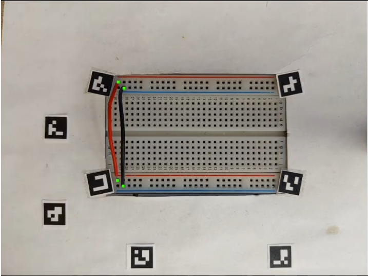
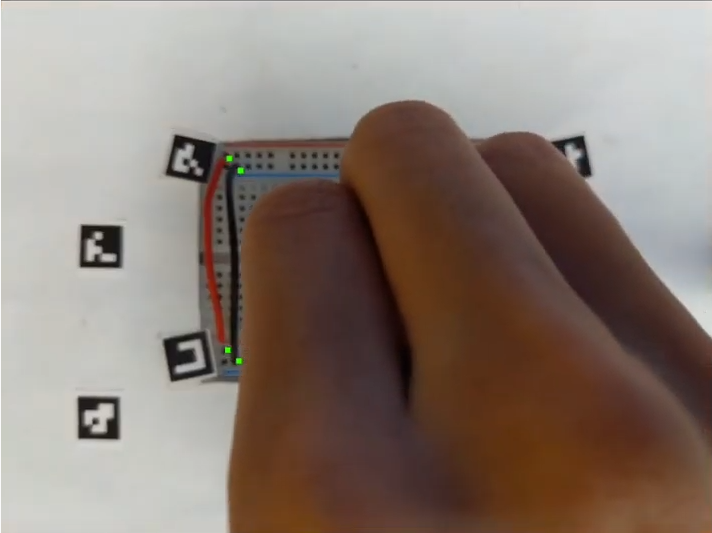
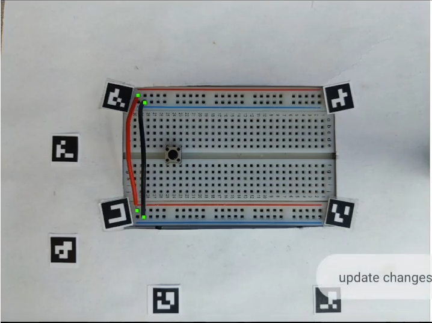
Object Detection & Location guess
We use Mask-RCNN model to train 400 breadboard circuit images and test on 98 images. We have totally 20 classes of electronics. The following picture show the result of the model, where the contours of electronics can be detected
To find the pins of each component, we have two strategies:
First, for the long component (e.g. wire and resistor), we can get two end points simply by the most distant two points of the contour.
Second, for other given components, we simply find which holes are covered by the mask and infer the location by its specifications (e.g. button has four pins on the corners).
However, this algorithm depends on the mask predicted by the model. Hence, we cannot yield very satisfied results.


Resistor Decoder
Basically, in this section we do the same thing as object detection but the target has been changed to color band. And then we calculate the distance to the gold band and decode the resistor value afterwards.
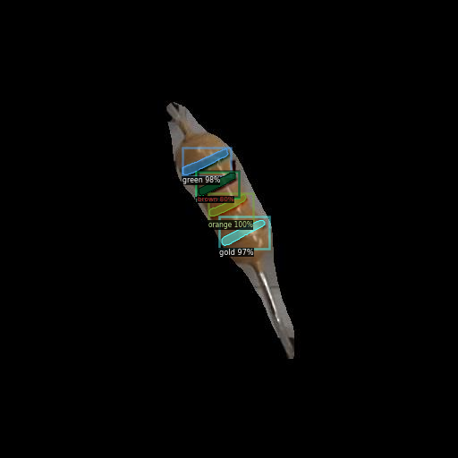
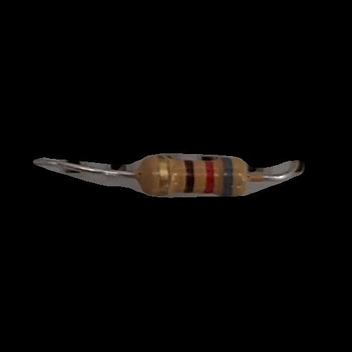
Hands Detection
As mentioned in last section, we put the paper codes on each corner of breadboard. Once user insert or take away component, their hands will hide the codes so that we can infer whether they modify their breadboard or not. Of course, we will still update the image even the hands just cross by the breadboard.
Interface Design & Workflow
Before starting helping, we need to know the positions of each holes. Hence, we first ask people to touch thte screen to activate our capturing algorithms.
After success, we will visualize each holes by overlaying many little squares on the screen. And then we first start to suggest them to connect the rails.
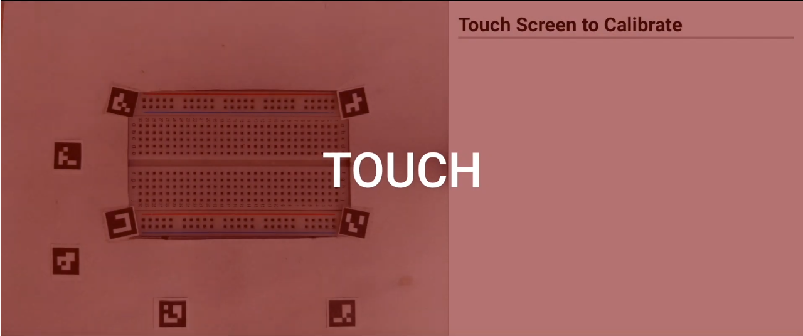
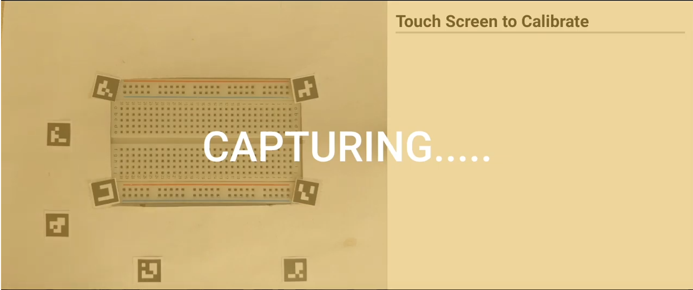
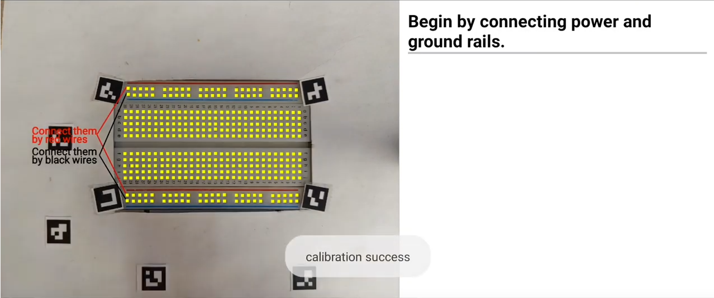
User first insert red wire on the breadboard and after being recognized, the tips for the red wire disappear.
The same thing happens after the black wire is inserted.
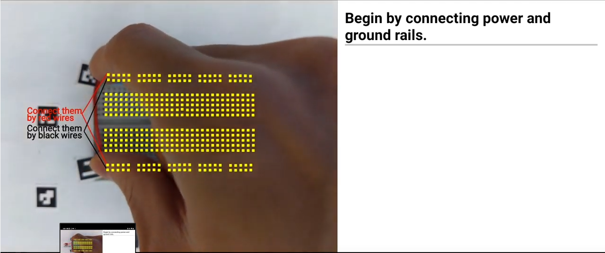
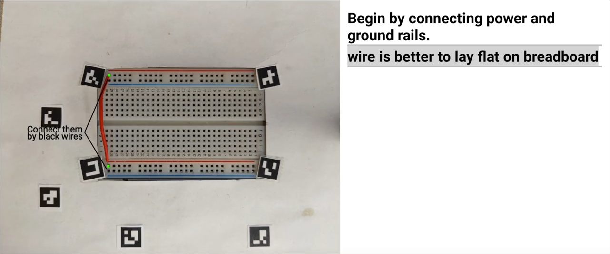
And then user place the button on the breadboard, the tooltips will pop up. For example, the autocomplete tips tell user they need to connect resistor to the power, the wire to the ground and the wire to connect to the digital pin of arduino.
Same as trimpot. We can customize any tooltips for the electronics in our database.
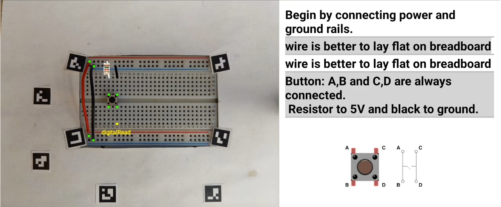
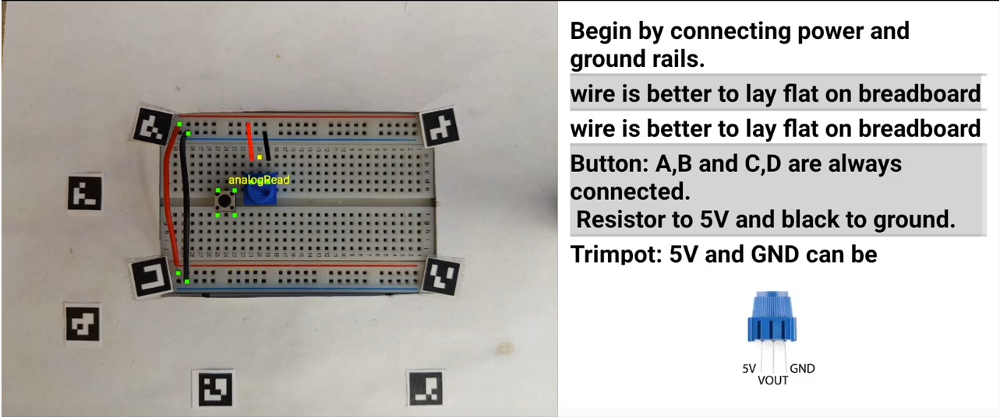
If the component goes complicated, we can still indicate which pin do what, like LCD and IC.
We can also decode resistor and overlay the value in red on the screen.
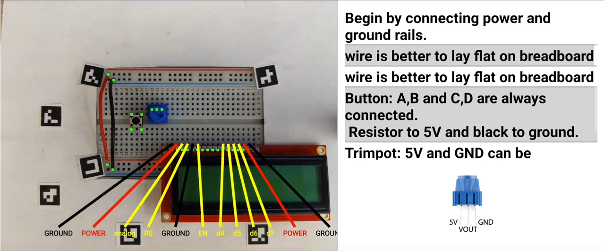
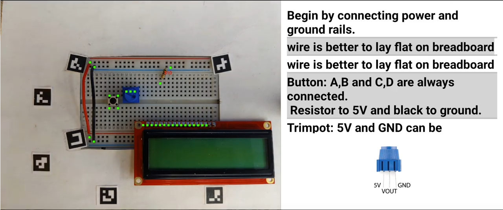